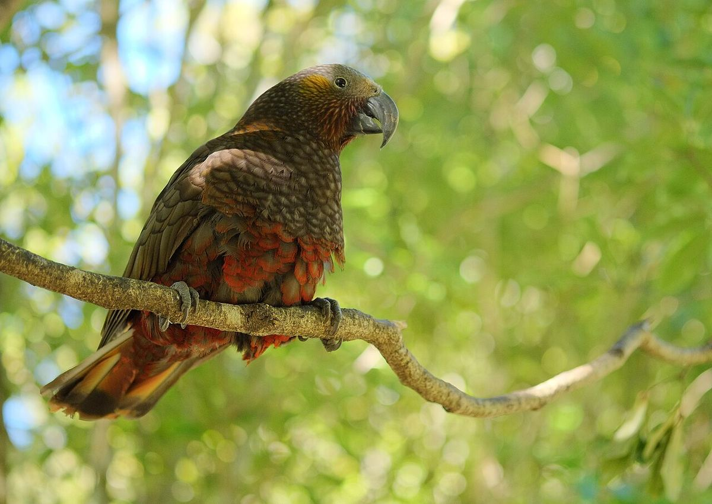

Kākā
Nestor meridionalis
Commonly seen in the canopy and in flowering pōhutukawa, especially at dawn and dusk.
Story
The Pohutukawa Trust says kākā became a regular sight over Kawau again in the early 2020s, probably flying in from Hauturu / Little Barrier. They are now breeding at Tāwharanui and on Waiheke.
Behaviour
Noisy, sociable parrots that gather at flowering trees and pōhutukawa blossom. They eat seeds, fruit, nectar, sap and wood-boring grubs, and nest in tree hollows more than 5 m up.
There’s more about this bird on Kawau in the island’s history.